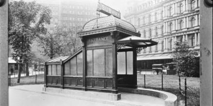
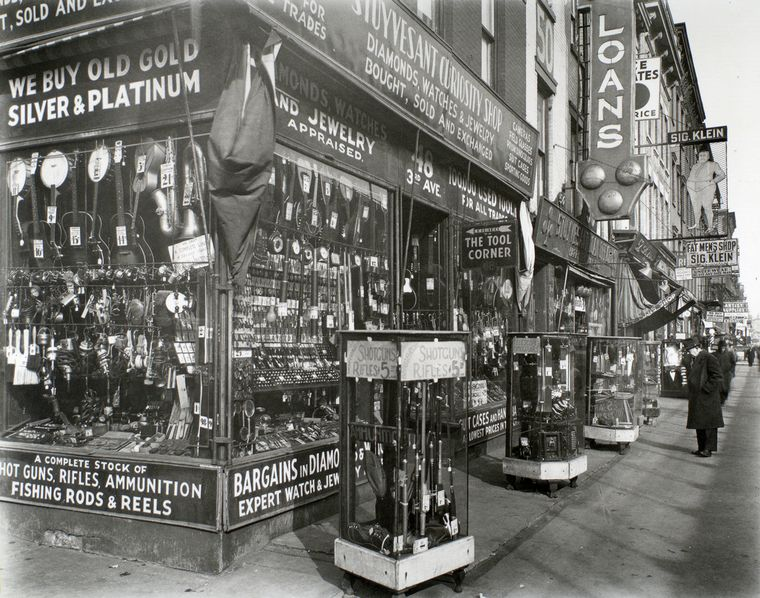

East Village has had its ups and downs through the years, but has always retained a strong sense of community. Largely built in the mid-1800s to house working families, the area hosted a diverse mix of local markets, stores, restaurants, and community centers catering to the German, Italian, Eastern European, and Puerto Ricans living in the area. 
Yet, most of these immigrant groups would not have called this area East Village at all. Until the 1960s, it was considered part of the Lower East Side, which at the time was also synonymous with slums. Robert Moses was already drawing up plans to demolish the Lower East Side to build sterile high rises. To differentiate the neighborhood, and to capitalize on the stable popularity of Greenwich Village, they rebranded as “East Village.” It worked.
By the 1980s, however, East Village was better known for its crime, drugs, and abandoned buildings than anything else. Yet the cheap rents allowed an artist community to flourish. Warhol and Basquiat spent time here. CBGB gave rise to punk. The cult classic play, Rent, was set here.
Eventually, the urban revival of the 1990s changed everything. As these things go, the East Village is now a hot spot, building upon its diverse past to be a eating and shopping destination for the city. Some win, some lose in this change, but East Village is still a place for people to get a start. Whether it’s the Italian deli that’s been there for nearly a century or the new halal butcher in a tiny basement it’s a personable place to visit and live.
Check out more on history and current events in the East Village:
Bowery Boogie,
Bedford and Bowery,
EV Grieve
Check out Billy Joel's sweet downtown moves at a gas station at 4th and Bowery (since transformed into the sceney B Bar and Grill):